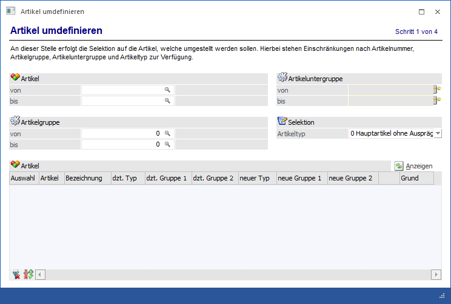

Über den Menüpunkt…
1 WinLine FAKT
1 Stammdaten
1 Ausprägungen
1 Artikel umdefinieren
… können bestehende Artikel in Bezug auf Ausprägungen geändert werden. D.h. bereits angelegte und gebuchte Artikel können so umgestellt werden, dass sie nun mit Ausprägungen verwendet werden können.

Die Umstellung von Artikeln untergliedert sich hierbei die in folgenden Bereiche, welche in den nachfolgenden Kapiteln beschrieben werden:
ü Bereich "Auswahl der Artikel"
In
dem Bereich "Auswahl der Artikel" kann definiert werden, welche Artikel
umgestellt werden sollen.
ü Bereich "Definition der zu verwendenden
Ausprägungen"
In dem Bereich "Definition der zu verwendenden
Ausprägungen" kann definiert werden, wie die Ausprägungen bei den Artikeln
verändert werden sollen
ü Bereich "Umbuchung bestehender
Lagerwerte"
Bei dem Umdefinieren eines reinen Hauptartikels kann können
mit Hilfe dieses Bereichs sofort Ausprägungen angelegt und bisher auf den
Hauptartikel durchgeführte Buchungen "umgebucht" werden.
ü Bereich "Durchführung"
In dem
Bereich "Durchführung" kann das Umdefinieren nach Anwahl des "Ok"-Buttons
durchgeführt werden.
Buttons
Ø Ok (nur im Bereich "Durchführung")
Durch Anklicken des Buttons "Ok" bzw. der Taste F5 werden folgende Aktionen ausgeführt:
ü Im Artikelstamm werden die Einstellungen für Ausprägung 1 und Ausprägung 2 bzw. Chargenverwaltung entsprechend der Eingabe gesetzt.
ü In offenen Aufträgen wird das Aufteilungsflag gesetzt, damit beim nächsten Druck das Aufteilungsfenster geöffnet werden kann (Umstellung von "Hauptartikel ohne Ausprägung" auf "Hauptartikel mit Ausprägung") bzw. das Aufteilungsfenster nicht mehr geöffnet wird (Umstellung von "Hauptartikel mit Ausprägung" auf "Hauptartikel ohne Ausprägung").
ü Es wird ein Protokoll ausgedruckt, in welchem ersichtlich ist, welche Artikel umgestellt wurden.
Hinweis 1
Die Ausprägungen selbst werden, bis auf die im Bereich "Umbuchung bestehender Lagerwerte" definierte, NICHT angelegt. D.h. diese müssen dann im Artikelstamm, in der Ausprägungsanlage oder in weiterer Folge in den Ausprägungsfenstern selbst angelegt werden.
Hinweis 2
Wenn im Bereich "Umbuchung bestehender Lagerwerte" die Umbuchung aktiviert wurde (mit Ausprägungsauswahl), dann werden folgende Änderungen bei den bisher auf den Hauptartikel gebuchten Daten durchgeführt:
ü Der Lagerstand wird umgebucht.
ü Im Artikeljournal wird die Artikelnummer ausgetauscht.
ü in der Statistik wird die Artikelnummer ausgetauscht.
ü In den Belegen wird eine Zeile mit der Ausprägung eingefügt und der Hauptartikel erhält das Flag "aufgeteilt".
ü Die Artikelperioden werden auch für die Ausprägung eingefügt.
Achtung
Wenn ein "Hauptartikel ohne Ausprägungen" zu einem "Hauptartikel mit einer Ausprägung" umdefiniert wird, dann werden die Autovervollständigungseinstellungen aus Ausprägungsoptionen (WinLine FAKT - Stammdaten - Ausprägungen - Ausprägungsoptionen - Register "Suche") nicht berücksichtigt. D.h. wenn eingestellt ist, dass bei "Artikel mit einer Ausprägung" nur der Hauptartikel, nicht aber die Ausprägung 1 in der Autovervollständigung erscheinen soll, dann wird dieses für die umgestellten Artikel nicht berücksichtigt. Hierfür muss im WinLine ADMIN das Datentool "/ARTMATCH" (System - Datentools) ausgeführt werden.
Ø Ende
Durch Drücken des Buttons "Ende" bzw. der Taste ESC wird der Programmbereich geschlossen und keine Änderung vorgenommen.
Ø Vor / Zurück
Mit den Buttons "Vor" und "Zurück" kann zwischen den Bereichen gewechselt werden.
Ø Info
Durch Anwahl des "Info"-Buttons wird die Auswertung "Artikel umdefinieren" am Bildschirm ausgegeben. In dieser werden die umzudefinierenden Artikel ausgewiesen.